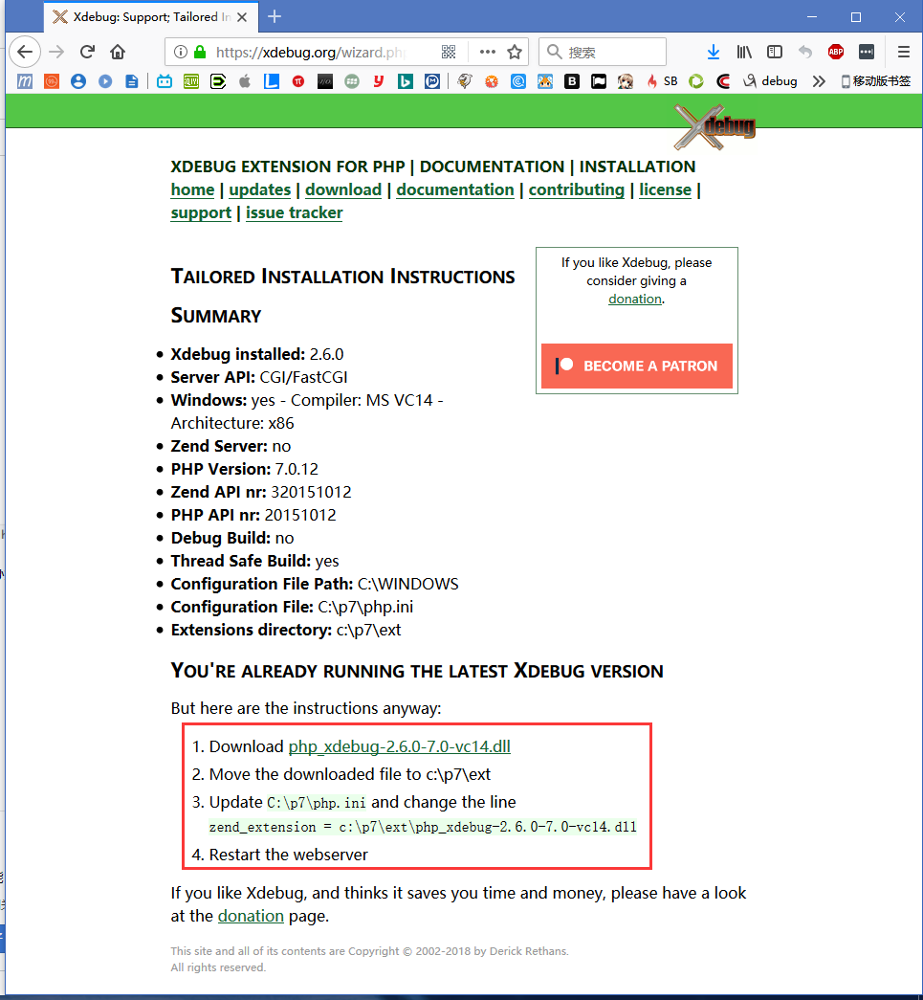
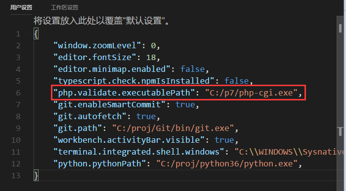

1、下载正确的xdebug
xdebug的官网是https://xdebug.org/，下载时要注意版本需要和PHP中的对应。用phpinfo();查一下版本信息：
比如我的PHP版本是7.0，Zend是用TS，VC14编译的。所以下载对应的xdebug与需要VC 14 TS版本。如果不确定的话，有一个更简单的办法，就是把phpinfo中网页的内容全复制下来，粘贴到https://xdebug.org/wizard.php这个页面中，让它来帮我们分析一下。结果可能是这样的：

这里已经明确的告诉了该下哪个版本的文件，放到哪个位置，如何配置。照做即可。
如果用的是OSX，那么结果可能是这样的：
配置好后再次查看phpinfo();能从中搜到xdebug的相关配置，就说明配对了。
2、正确配置xdebug
把下载好的dll文件放到php的ext目录下。然后打开php.ini，把xdebug的配置写进去：
[Xdebug]
zendextension=C:\p7\ext\phpxdebug-2.6.0-7.0-vc14.dll
另外需要注意的是这几个配置：
xdebug.remote_enable=1
xdebug.remote_autostart=1
xdebug.remote_port=9002
xdebug.remote_log="c:/xdebugout"
这几项配错直接导致xdebug不可用。前2个是打开xdebug远程调试功能，remote_port是xdebug的端口，不要和其它端口配置成一样的，这里的端口后面vscode中要用到。 配置好后重启php-fpm，应该不会看到任何报错。
3、配置VSCode
在VSCode中安装好PHP Debug扩展并打开配置文件，修改php.validate.executablePath这项配置，把它指向php-cgi.exe。

接下来配置VSCode，选择Listen for XDebug，点击右面的小齿轮，修改配置文件：
这里维一要修改的就是port参数，要和之前php.ini中配置的端口一致。接下来就可以愉快地调试了。